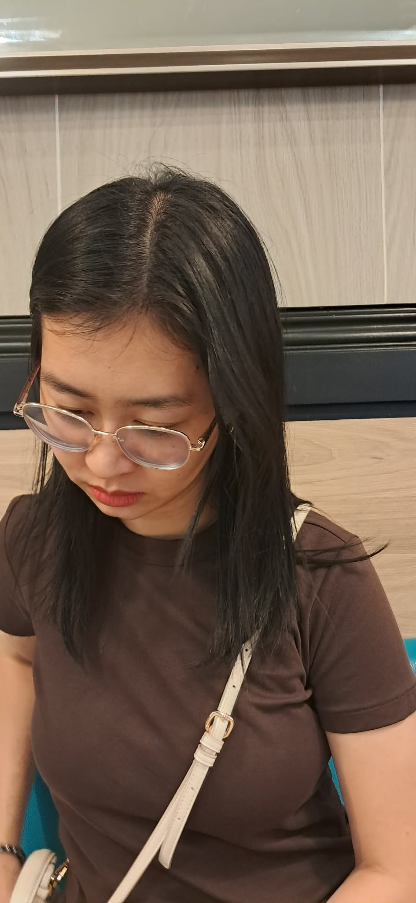
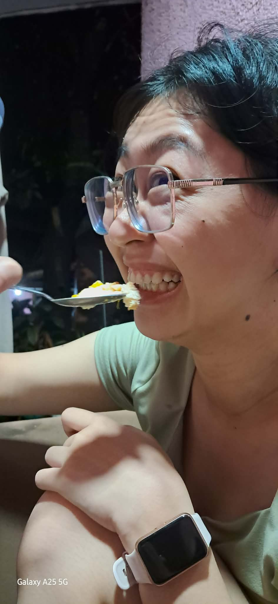
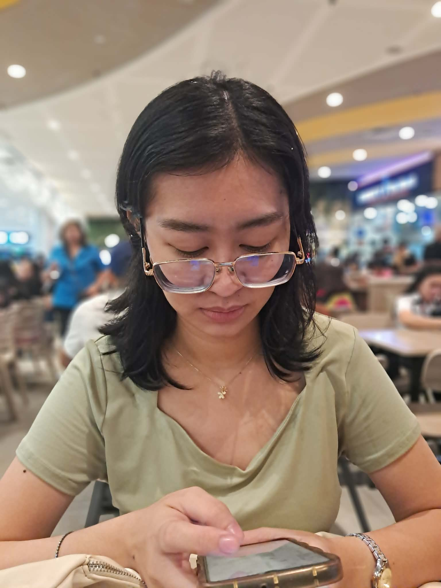
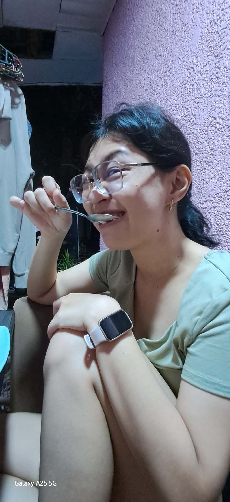

January 27,2026
Eto yung napili kong kanta for this message. So please play it while you're reading this.
I wanted to leave this note here para pag-open mo, mapangiti ka agad bago ka pumunta sa work. Gusto ko lang din pala iremind sa’yo na safe na sa safe ka dito sa akin, you can just be yourself nang walang kahit anong worries. Katulad nung sabi ko kanina, ang linis and pure ka sa mga mata ko, Because you really are.
Whenever Im looking at you, ang nakikita ko lang naman ay yung pure at genuine mong puso. You can always trust me na iingatan ko ang puso mo at laging peaceful at respectful lang ang relationship natin. I’m so lucky to have you, at sobrang proud ako sayo lalo na sa pagiging hardworking mo everyday.Napapaisip lang ako na hindi at never na never mong kailangan na iprove ang sarili mo or magpanggap. kasi you know what, yung ikaw ngayon? Yun ang mismong Erika na gusto kong makasama. I do really appreciate your honesty and how you opened up to me. lalo kitang nirespeto at hinangaan dahil doon btw. Ikaw ang nagturo sa akin kung paano mag-alaga nang seryoso, and I promise na ako ang laging magpapaalala sa’yo kung gaano ka ka-worth at tuwing nakakalimutan mo. Ikaw ang peace ko sa chaotic world na to hahaha, and I’m so grateful for your kindness.
Every day feels like a fresh start for us, and love ko yung environment/world na binuo natin dalawa kung saan ang mahalaga ay yung "now.". Napapaisip lang din ako, I know you don't do this pero never na never mong kailangan na iprove ang sarili mo or magpanggap. kasi you know what, yung ikaw ngayon? Yun ang mismong Erika na gusto kong makasama.I do really appreciate your honesty and how you opened up to me. lalo kitang nirespeto at hinangaan dahil doon btw. Ikaw ang nagturo sa akin kung paano mag-alaga nang seryoso, and I promise na ako ang laging magpapaalala sa’yo kung gaano ka ka-worth at tuwing nakakalimutan mo.Ikaw ang peace ko sa chaotic world na to hahaha, and I’m so grateful for your kindness.
Looking at your photos here, na-realize ko uli kung bakit favorite ko yung smile mo. Every time na tumatawa ka or tumitingin sa camera with that genuine smile and all, lumalabas talaga kung gaano ka kabait at kabuting tao inside and out. Thank you for showing me that. Ang gaan sa pakiramdam ng ngiti mo, kaya sana dala dala mo yan sa buong shift mo today. Favorite ko as always yung makita kang masaya, and I’ll do everything para laging may reason yang smile mo.
Sana maging okay ang work mo today! Looking forward and super excited na rin ako for our first anniversary on March 25! I’m so happy na ako ang nasa tabi mo! I love you super duper! Hugs!
By: Daniel